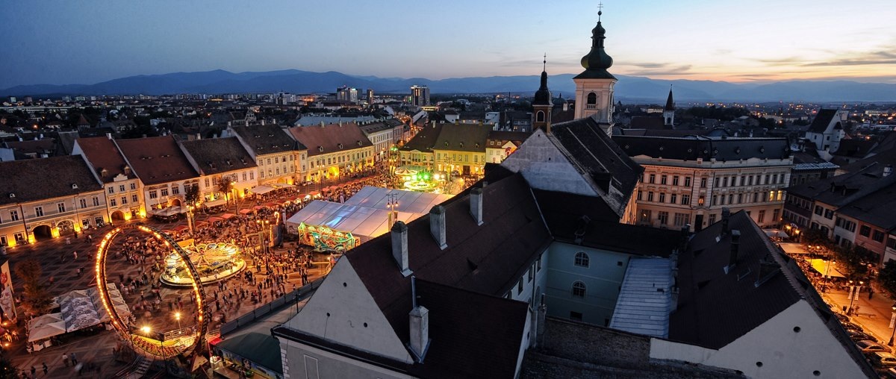
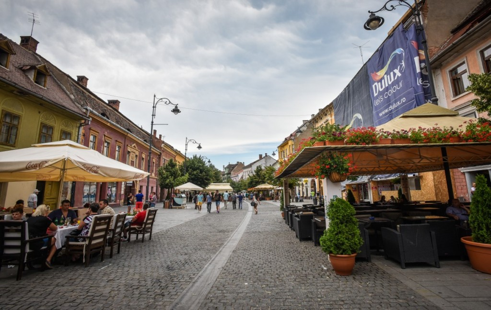
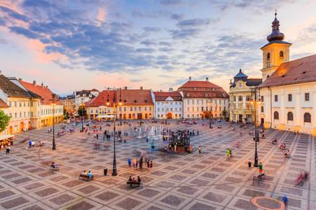
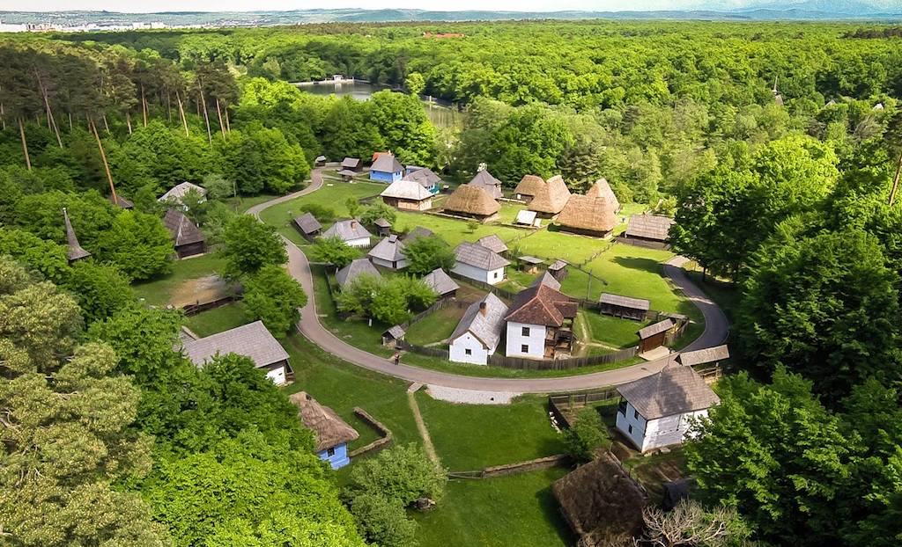
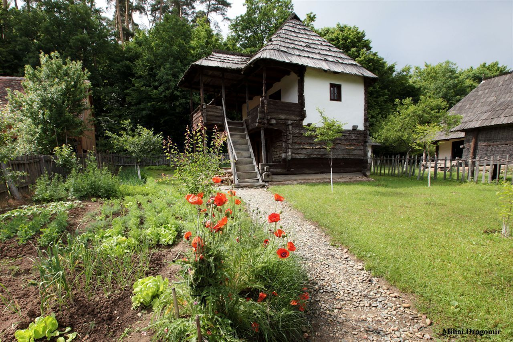
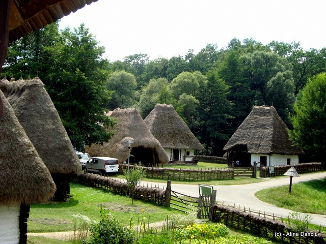
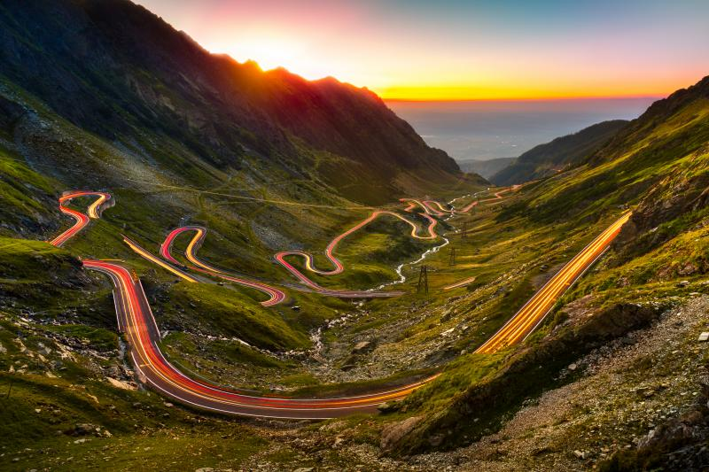
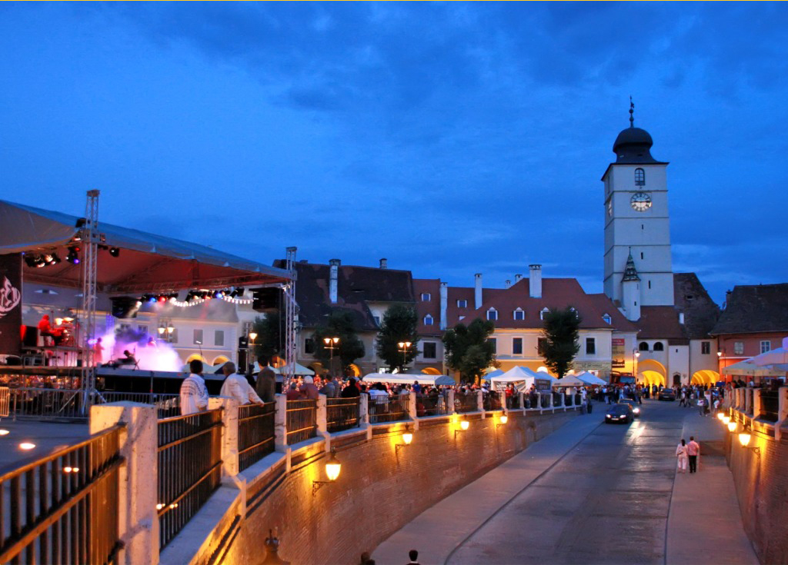
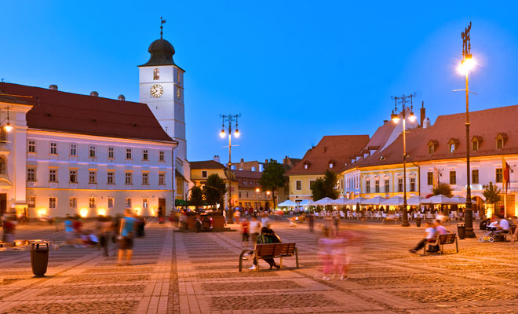

Devenită, o dată cu evenimentele din decembrie ’89, un simbol, un fel de “kilometrul 0” al Sibiului, Piaţa Mare, una dintre cele mai mari din Transilvania, situată în partea de nord a oraşului, a reprezentat dintotdeauna o veritabilă emblemă a străvechiului burg.
Deşi se pare că a fost construită în 1366, ca o a treia centură de apărare a cetăţii, respectiva incintă a fost menţionată pentru prima oară în hrisoavele vremii abia în anul 1411, ca fiind principala piaţă de desfacere a cerealelor, dar în acelaşi timp şi loc de întruniri ori execuţii publice. De altfel, aici se aflau “Stâlpul Infamiei”, având statuia lui Roland în vârf, spânzurătoarea şi “Cuşca pentru nebuni”, unde, în timpul zilei erau expuşi oprobriului public cei ce tulburau noaptea liniştea semenilor. Având acelaşi traseu conturat încă din secolul al XIV-lea , Piaţa Mare are o formă dreptunghiulară cu lungimea de 142 m şi lăţimea de 93 m. Pe laturile ei au rămas în picioare, atinse doar de patina vremii, vechile case nobiliare medievale, alături de un alt simbol de marcă al oraşului, Palatul Brukenthal, locul de început al promovării artei în această parte a Europei.
 Muzeul Astra din Sibiu este cel de-al doilea muzeu în aer liber din lume, ca mărime. Acesta deține mai mult de 300 de clădiri, precum şi mori de vânt, mori de apă, prese gigantice pentru vin, fructe şi ulei, forje şi structuri hidraulice, cu stiluri arhitecturale din mai multe părţi ale României. Muzeul a fost deschis in 1967, iar în 1989 se adaugă sectorul monumentelor de utilitate publică și socială (biserică, școală, cârciumă, popicărie). Suprafața totală a acestuia este de 96 de hectare și aproximativ 16.000 de piese sunt expuse în muzeu sau în interiorul clădirilor.
| Ocupatii traditionale | Mestesuguri traditionale | Industrii traditionale | Arta traditionala |
|---|---|---|---|
| Pescuit | Prelucrarea lemnului | Morarit | Arhitectura Populara |
| Apicultura | Olarit | Ulei | Arta populara |
| Viticultura | Prelucrarea metalelor | ||
| Pomicultura | Prelucrarea textilelor |
Muzeul Civilizaţiei Populare Tradiţionale “ASTRA” este situat în pădurea Dumbrava, la 3 km de Sibiu, iar clădirile sunt expuse in jurul a două lacuri artificiale. Printre case se găsesc peste 10 km de alei.
Unele dintre cele mai spectaculoase clădiri sunt morile de vânt, popicăria adusă de la Păltiniș, câteva mori de apă și o pescărie din Delta Dunării. În muzeu se mai găsește și o biserică de lemn din nordul Transilvaniei adusă între 1990-1992 din satul Bezded.
 Transfagarasan este drumul printre muntii Fagarasului, ce incepe din localitatea Bascov, judetul Arges si se termina in apropierea localitatii Cartisoara, judetul Sibiu.Cu o lungime de aproximativ 152 Km, parte a DN 7 C, drumul face legatura intre cele doua provincii istorice Muntenia si Transilvania.De-a lungul acestei rute au fost construite diferite locatii care ofera cazare la cele mai inalte standarde si la preturi competitive.
Odata cu pornirea lucrarilor la ruta printre muntii Fagarasului, o problema a constituit-o muntele Paltinul. Atfel s-a luat hotararea de a sapa un tunel. Tunelul are o lungime de 884 metri, o latime de 6 metri si o inaltime de 4,40 metri fiind construit la kilometru 116+360 in anul 1972, fiind cel mai lung tunel si tunelul situata la cea mai mare altitudine din tara noastra. In anul 1974, la inaugurare a functionat in incinta acestuia si o instalatie de iluminat care nu mai exista.
Pe ruta Transfagarsan mai sunt urmatoarele 4 tuneluri :
la kilometru 57+465, un tunel cu lungimea de 15,95 metri si latimea de 6 metri, construit in anul 1962;
la kilometru 57+600, un tunel cu lungimea de 51,47 metri si latimea de 6,20 metri, construit in anul 1962;
la kilometru 60+700, un tunel cu lungimea de 117,10 metri si latimea de 6 metri, construit in anul 1962;
la kilometru 61+400, un tunel cu lungimea 97,89 metri si latimea de 7,10 metri, construit in anul 1962.
Transfagarasanul prin maretia si frumuseatea sa a antrenat o puternica dezvoltare economica a zonei. Din aceasta perspective turistica, locurile mai dezvoltate sunt si cele mai cunoscute, precum barajul si lacul Vidraru, Balea Lac, Balea Cascada, Cumpana, Valea cu Pesti sau mai nou statiunea Molivisu. In aceste puncte s-au construit numeroase hoteluri, cabane si pensiuni.
Piaţa este împărţită în două părţi distincte de strada Ocnei care coboară pe sub Podul Minciunilor spre oraşul de jos.Latura nordică şi estică a pieţei urmăreşte conturul celei de-a doua centuri de fortificaţii, prezentându-se sub formă circulară. Clădirile din partea de nord au o formă concavă şi urmăresc conturul primei centuri de fortificaţii, ele despărţind Piaţa Mică de Piaţa Huet.Clădirile din Piaţa Mică datează din sec. XIV – XVI şi, cu o singură excepţie, nu au acel portal masiv, boltit caracteristic Pieţei Mari sau străzii Bălcescu. Caracteristica caselor din Piaţa Mică este loggia de la parter, boltită şi semideschisă spre piaţa, cu arcade semicirculare susţinute de portanţi. Clădirile din Piaţa Mică adăposteau ateliere meşteşugăreşti şi în aceste spaţii erau etalate mărfurile.
 